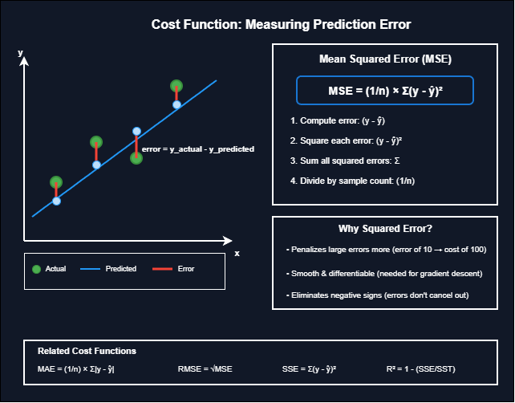

A cost function measures how wrong a model's predictions are. Without it, there is no way to know if one set of weights is better than another. The cost function provides the feedback signal that guides learning. Minimizing this function is the entire goal of training.
For regression problems, the most common cost function is Mean Squared Error (MSE).
MSE = (1/n) × Σ(y_actual - y_predicted)²
Breaking It Down
- Calculate the difference between actual and predicted values (the error or residual)
- Square each error
- Sum all squared errors
- Divide by the number of samples
Why Squared Error?
Why squared error instead of absolute error? Three reasons make squaring the preferred choice:
- Penalizes large errors more heavily: An error of 10 contributes 100 to the cost, while an error of 2 contributes only 4. This pushes the model to avoid big mistakes rather than tolerating a few large errors in exchange for many small ones.
- Smooth and differentiable: Squared functions are smooth and differentiable everywhere. This mathematical property matters because gradient descent requires computing derivatives to know which direction to adjust weights. Absolute value has a kink at zero where the derivative is undefined.
- Removes negative signs: Squaring removes negative signs. Without squaring, positive and negative errors would cancel out, giving a misleading total that suggests the model is accurate when it is not.
Intuition
Think of the cost function as a grading system for the model. Each prediction gets scored based on how far it missed the actual value. Squaring is like penalizing a student more harshly for being 20 points off than for being 5 points off, rather than treating all mistakes equally per point.
Example Calculation
import numpy as np
y_actual = np.array([3, 5, 2, 7])
y_predicted = np.array([2.5, 5, 2.5, 8])
# Manual calculation
errors = y_actual - y_predicted
squared_errors = errors ** 2
mse = np.mean(squared_errors)
print(f"Errors: {errors}") # [ 0.5 0. -0.5 -1. ]
print(f"Squared errors: {squared_errors}") # [0.25 0. 0.25 1. ]
print(f"MSE: {mse}") # 0.375
The cost function landscape showing the path to the minimum
Related Cost Functions
Related cost functions serve different purposes:
- Mean Absolute Error (MAE): Uses absolute value instead of squaring. Less sensitive to outliers but not differentiable at zero.
- Root Mean Squared Error (RMSE): Square root of MSE. Returns error in original units, making interpretation easier.
- Sum of Squared Errors (SSE): Total squared error without averaging. Used in some optimization contexts.
- R-squared (R²): Proportion of variance explained by the model. Ranges from 0 to 1, where 1 means perfect fit.
Cost Function Landscape
The cost function landscape can be visualized as a surface where the x and y axes represent model parameters (weights) and the z axis represents the cost. Training is the process of finding the lowest point on this surface. For linear regression with MSE, this surface is convex, meaning it has a single global minimum. This guarantees that gradient descent will find the optimal solution regardless of starting point.
Concrete Example
Consider a concrete example. Predicting house prices with four data points: actual values are [300k, 400k, 350k, 500k] and predictions are [310k, 380k, 360k, 520k]. The errors are [-10k, 20k, -10k, -20k]. Squared errors become [100M, 400M, 100M, 400M]. MSE equals 250M. The model is penalized more for the 20k errors than the 10k errors, which is the intended behavior.
Limitations
Limitations of squared error include sensitivity to outliers, since one extreme value can dominate the cost. If a single house in the dataset sold for an unusually high price due to special circumstances, MSE will heavily weight that error and distort the fitted line. It also assumes errors are normally distributed, which may not hold in practice.
Key Takeaway
The cost function is the bridge between making predictions and improving them. Choose MSE for regression when outliers are not a major concern and mathematical convenience matters for optimization.